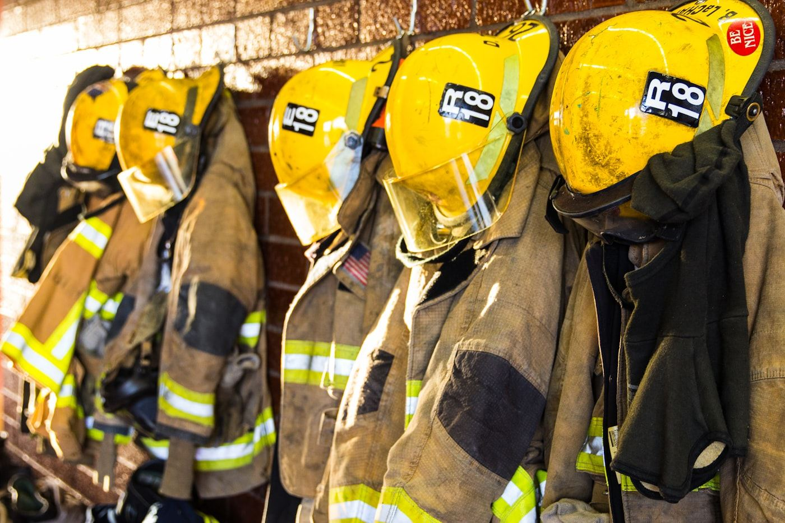
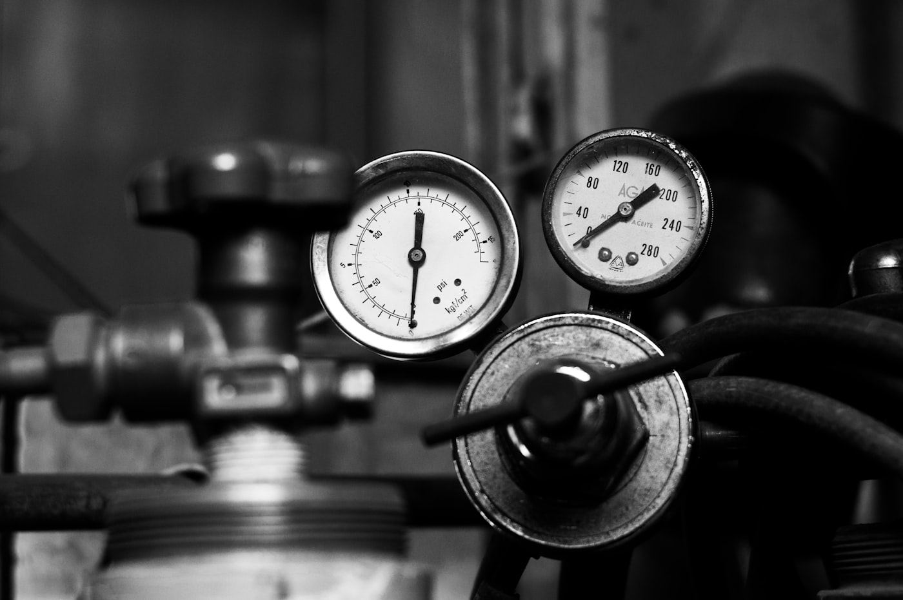

SCBA Cylinder Testing
Periodic inspection and hydrostatic testing of SCBA breathing-air cylinders for fire services and other breathing-air users, carried out at our Kilmallock facility, with nationwide collection.
What the service covers
A breathing-air set is only as good as its last test. We carry out periodic inspection and hydrostatic testing of SCBA cylinders to ISO 18119 and EU Pi-mark (TPED) standard, to keep your fleet compliant and, more importantly, safe for the people using it.
- Periodic inspection and hydrostatic testing of SCBA breathing-air cylinders to ISO 18119 and TPED.
- Valve inspection — checking the valve and any pressure-relief device, servicing or replacing where required.
- Refurbishment — shot blasting, repainting and re-valving where a cylinder needs bringing back to standard — see refurbishment.
- Cylinder filling carried out on site once testing and inspection is complete — see cylinder filling.
- Nationwide collection on ADR-compliant transport, so batches can be collected, tested and returned together.

Who uses it
Fire services
SCBA breathing-air cylinder testing for fire services, with the paperwork your compliance officer needs. See our fire services & public bodies page.
Dive centres & marine
Scuba cylinders and breathing-air cylinders for dive centres and marine operators. See our diving page.
Public bodies
Local authorities and other public bodies use us for SCBA, extinguisher and industrial gas cylinder testing on a schedule that suits them.

How testing works
Every cylinder that comes through our doors goes through the same disciplined process, regardless of what it held or who it belongs to.
- External examination — checking the cylinder shell for corrosion, dents, gouges, fire damage and any deformation that would affect safe use.
- Internal examination — inspecting the internal surface for corrosion, pitting or contamination once the valve is removed.
- Hydrostatic test — pressurising the cylinder with water to a set test pressure to confirm it holds pressure safely and hasn't stretched beyond an acceptable limit.
- Valve inspection — checking the valve and any pressure-relief device, servicing or replacing where required.
- Stamping & certification — cylinders that pass are stamped with the test date and our identification mark, and issued with certification paperwork for your records.
Cylinders that fail are held separately and reported back to you, with an explanation of why, rather than being quietly returned untested.
Ready to book a collection?
Tell us what you have and we'll come back with pricing, turnaround and collection options.